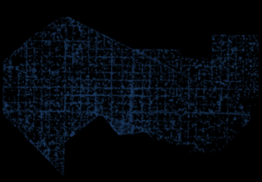
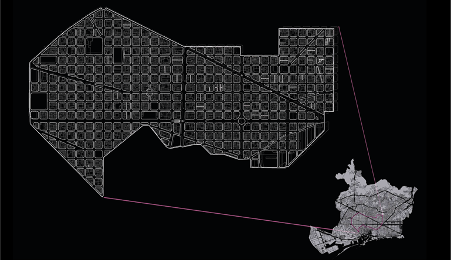
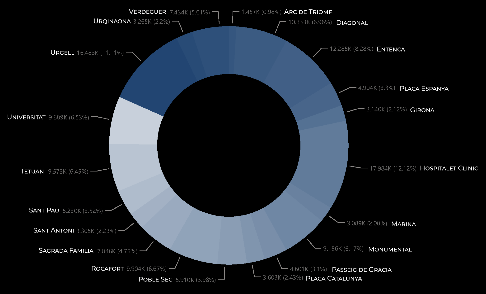
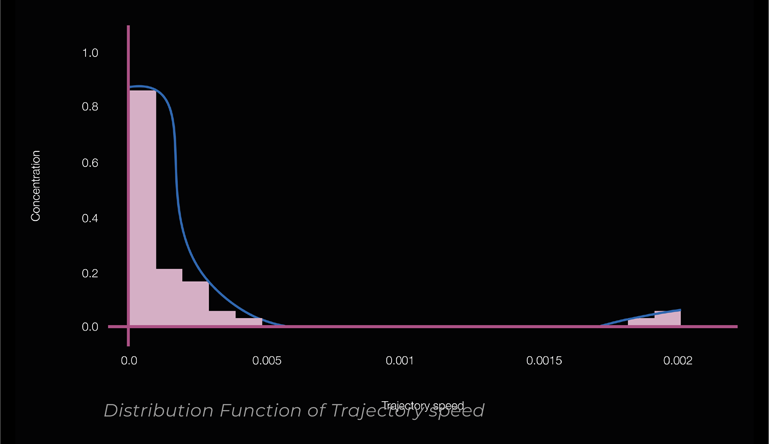
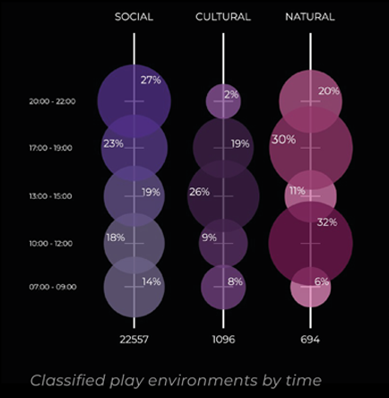
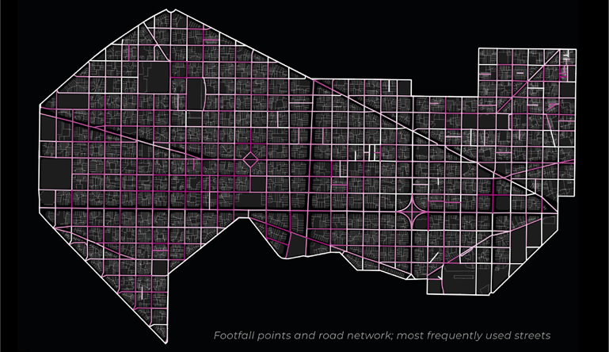

Eixam(play): Analysing Footfall Flows
Eixam(play) is a studio project which looks at urban mobility in the context of urban ‘play’.
Introduction
Part of our analysis involved breaking down the footfalls data in Barcelona to understand these urban mobility patterns. We used Python to clean and filter the large dataset; we further used several scripts for our analysis and interpret the concentration in relation to mobility and ‘play’ environment spaces.
Libraries used:
import pandas as pd
import matplotlib
import matplotlib.pyplot as plt
import geopands as gpd
from shapely.geometry import Point
import os
import sys
import movingpandas as mpd
Step 1: Clipping the area of interest
First, we clipped the footfall data in Python by filtering by neighborhood, to our area of interest in Eixample.
 Step 2: Initial analysis
The next steps were to map the trajectories of people’s flows within and through Eixample to determine speed; by taking repeated random samples, we were able to extract an unbiased confidence interval of speed, to understand the categorization of mobility, as this would affect our intervention on each specified street.
Our next steps were to group all the points by pulling each one to the nearest metro stop; We did this to extract information on concentration in major mobility hubs in our area of interest. Note that the encatchment area for busier stops is smaller, thus attracting fewer points within the timeframe selected; understanding this bias led us to examine the less connected areas of Eixample.
 Step 3: Further exploration
Further building on this, using a dataset of the road network, we projected each point onto the nearest line in the network using a closest point script, to identify the most frequently used roads and categorized the roads based on the concentration to aid in our identification of mobility corridors.
The final process was to extract information regarding the type of activity in the city and the footfalls data; we predefined environments in the city as natural, social, and cultural. By combining this with the footfalls, we were able to interpret the highest concentration of people at each environment and at what time of the day.
 Conclusion
To conclude, our analysis of the footfall dataset of Barcelona focused solely on Eixample, after understanding the distributions and characteristics of the data, to help us identify the relevant corridors, we compiled it with the road network and our pre-defined play environments of natural, social, and cultural, which revealed the urban mobility patterns according to time of day and highly concentrated areas, aiding our analysis of intervention zone.

Sources: OpenBCN / InAtlas / OpenStreetMap
Eixam(play) is a project of IAAC, Institute for Advanced Architecture of Catalonia developed in the Master in City & Technology 2021/22 by Students: Dimitrios Lampriadis, Julia McGee, Lucas Zarzoso and Parshav Sheth, Faculty: Diego Pajarito and Tugdual Sarazin